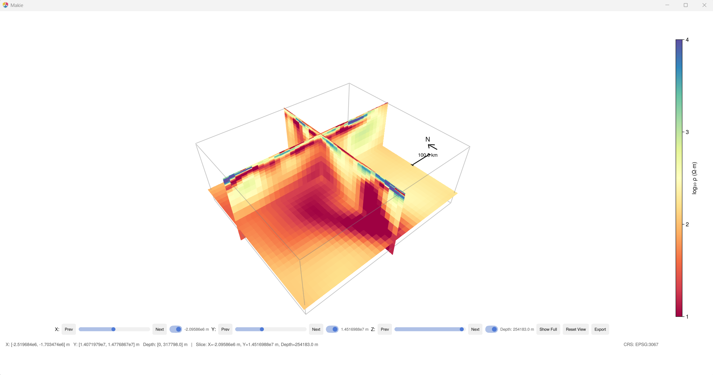
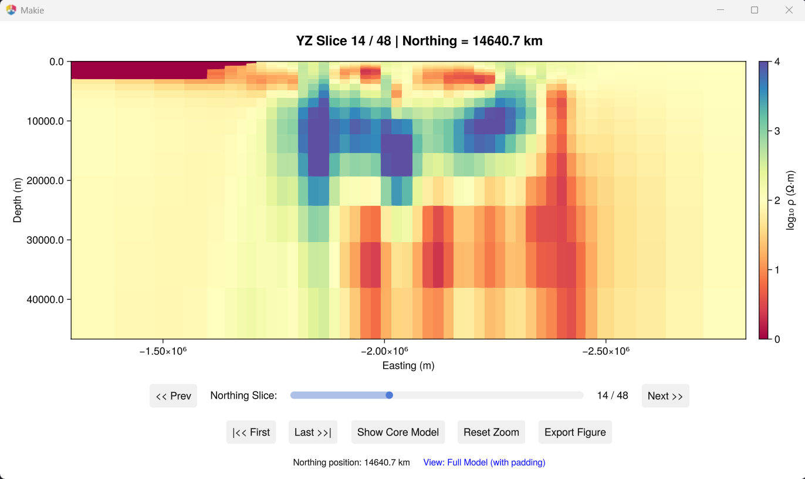

3D Visualization
Interactive GLMakie viewers for exploring 3D resistivity models with depth slices, cross-sections, and GIS overlays.
Full 3D slice viewer
julia --project=. Examples/plot_model_3D.jlCombined XY/XZ/YZ slices with depth controls, padding toggle, shapefile overlays, and figure export.

XY depth slices
julia --project=. Examples/plot_XY_slices.jlHorizontal map-view slices at selectable depths.

XZ cross-sections
julia --project=. Examples/plot_XZ_slices.jlNorth-South vertical sections at selectable East-West positions.

YZ cross-sections
julia --project=. Examples/plot_YZ_slices.jlEast-West vertical sections at selectable North-South positions.

Coordinate systems
Switch the coordinate mode at the top of each viewer script:
| Mode | Description |
|---|---|
"model" | Local model coordinates (metres) |
"EPSG:3067" | Finnish national grid |
"EPSG:4326" | WGS84 latitude/longitude |
GIS overlays
Add shapefile overlays by setting shapefile_path in the viewer script:
shapefile_path = "path/to/coastline.shp"
target_crs = "EPSG:3067"Model editing (experimental)
Interactive scripts for modifying resistivity values by hand:
julia --project=. Examples/edit_model_by_slice.jl
julia --project=. Examples/edit_model_by_drawing.jlExample data
The Cascadia 3D example is not bundled. Download it from ModEM-Examples and place it in Examples/Cascadia/.